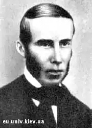

Метлинський Амвросій Лук’янович (1814 – 17 (29).07.1870) – український поет, фольклорист, видавець.
Портрет А. Л. Метлинського
Народився в с. Сари (нині – Гадяцького району Полтавської обл.) у родині дрібного поміщика. Навчався у Гадяцькому повітовому училищі та гімназії, в 1835 р. закінчив Харківський університет, у якому залишився працювати. В 1843 – 1849 та в 1854 – 1858 рр. – професор Харківського університету, в 1849 – 1854 рр. – професор Київського університету, але як педагог і науковець він слави не здобув. У Харківському університеті познайомився з І. Срезневським і увійшов до його гуртка, почав писати поезії. В 1839 р. під псевдонімом Амвросій Могила була надрукована основна збірка його поезій – "Думки і пісні та ще дещо". Метлинський підтримував творчі зв’язки з чеським поетом Ф. Челаковським, перекладав його вірші українською мовою. Челаковський переклав три поезії Метлинського ("Гетьман", "Дитина-сиротина", "Козачая смерть") і надрукував їх у журналі "Časopis českeho Museum", 1842 р., т. 3. В 1848 р. Метлинський опублікував 5 випусків "Южного русского сборника", де опублікував свої твори та твори інших українських письменників. В 1852 р. він опублікував "Байки й прибаютки" Л. Боровиковського, а в 1854 р. – збірник "Народные южнорусские песни". Його творчість була позитивно оцінена уже Миколою Костомаровим – його харківським товаришем.